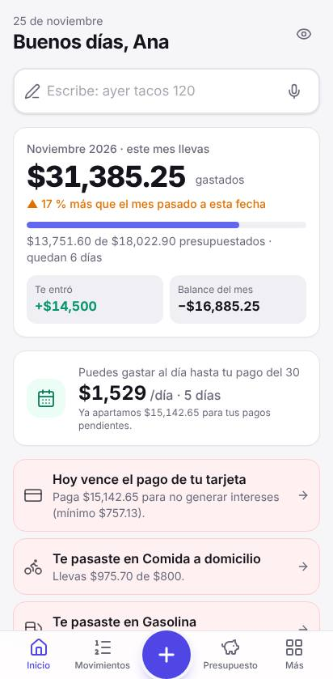
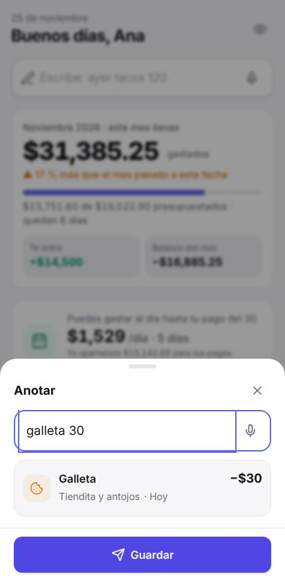
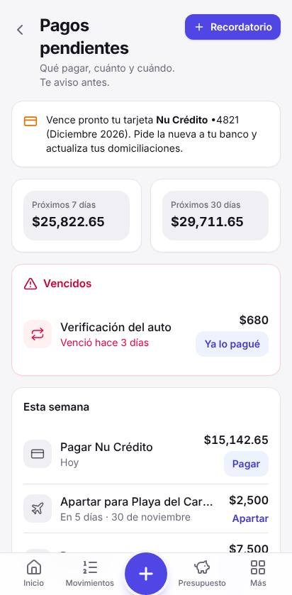
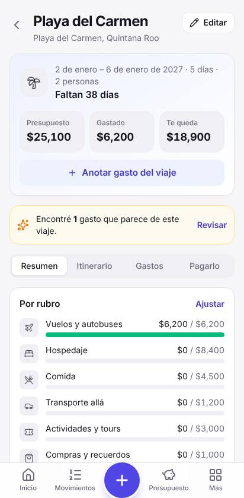
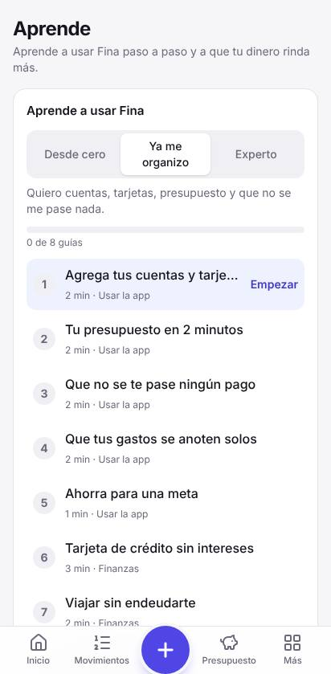

Fina
Finanzas personales para México
Fina se instala en tu celular. Mándate este enlace y ábrelo ahí:
O úsala aquí en la computadora →




Cómo instalarla
- Toca “Descargar para Android”. Se baja el archivo
fina.apk(pesa como una foto). - Ábrelo desde la notificación de descarga o desde la app Archivos → Descargas.
- Si el teléfono pregunta, toca Configuración → “Permitir de esta fuente” y regresa. Es normal: Android lo pide con cualquier app que no viene de la Play Store.
- Toca Instalar y luego Abrir. Si aparece Play Protect, toca “Más detalles” → “Instalar de todas formas”.
- Listo: Fina queda con su ícono como cualquier app. Cuando haya una versión nueva, la misma app te avisa para actualizar con un toque.
- Abre esta página en Safari (si estás en WhatsApp o Instagram, toca “…” → “Abrir en Safari”) y toca “Instalar en iPhone”: se abre Fina.
- Toca el botón Compartir (abajo en el centro).
- Desliza y elige “Agregar a pantalla de inicio”, luego “Agregar”.
- Abre Fina desde su ícono: se ve a pantalla completa, como cualquier app, y se actualiza sola.
En iPhone, Fina funciona igual, salvo leer las notificaciones del banco (Apple no lo permite). Puedes anotar por WhatsApp o reenviando los correos de tu banco.
Lo que puedes hacer
- Anota en una línea: “tacos 120”, “uber 85 con nu”, “+15000 quincena”. También por voz o WhatsApp.
- Gastos automáticos (Android): lee solo los avisos de compra de tu banco.
- Tarjetas y MSI: fecha de corte, pago para no generar intereses y avisos antes de la fecha límite.
- Pagos pendientes, metas y viajes con cuánto apartar cada quincena.
- En pareja: gastos compartidos y cuentas claras.
- Aprende: guías para usarla desde cero hasta nivel experto.
Tu información es tuya
- Nunca te pedimos la contraseña de tu banco.
- No vendemos tus datos ni mostramos anuncios.
- Puedes protegerla con PIN o huella, exportar todo y borrar tu cuenta cuando quieras.
Preguntas
¿Por qué Android dice “app desconocida”?
Porque por ahora Fina se descarga desde esta página y no desde la Play Store. Es la misma app; cuando esté en la tienda podrás instalarla desde ahí.
¿Cómo me actualizo?
En Android, Fina te avisa cuando hay versión nueva: tocas “Actualizar” y se instala encima, sin perder nada. En iPhone se actualiza sola.
¿Necesito crear cuenta?
No. Puedes usarla sin cuenta y todo se guarda en tu teléfono. Si creas cuenta, tus datos se respaldan en la nube y los ves en cualquier dispositivo.
Estoy probando la beta, ¿cómo mando comentarios?
Dentro de la app: Más → Enviar comentarios. Nos ayuda muchísimo.